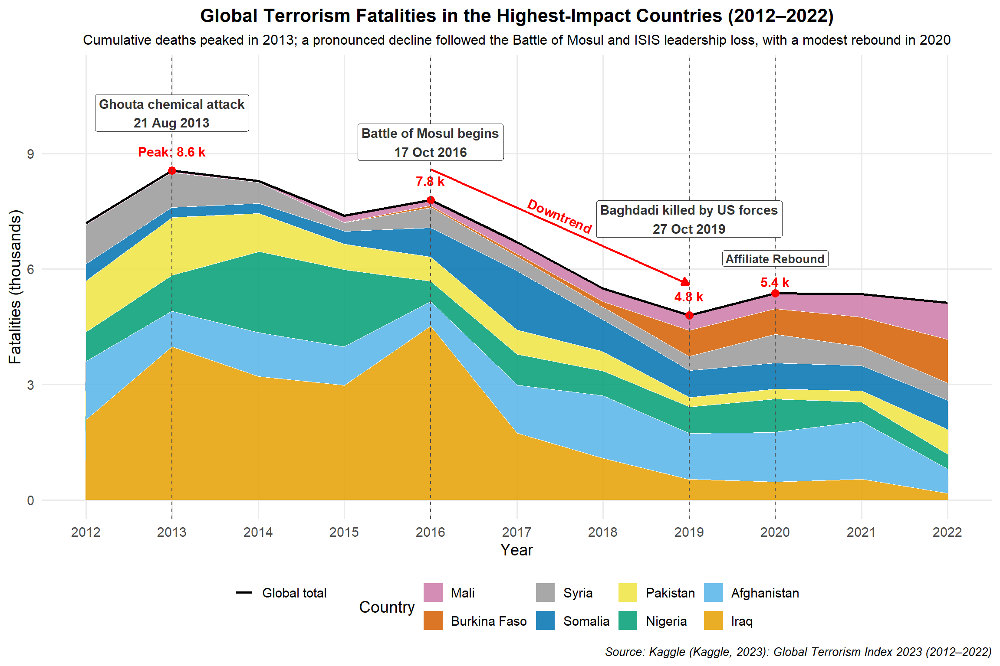

This analysis explores the Global Terrorism Index (GTI) data from 2012 to 2022, examining trends and patterns in terrorism impact across countries. The GTI is a comprehensive measure that incorporates incidents, fatalities, injuries, and hostage situations to quantify the impact of terrorism globally.
2. Exploration Data Analysis
2.1. Terrorism Index Overview
The first visualization shows the overall trend of GTI scores for the top 15 most affected countries from 2012 to 2022. This provides a comparative view of how terrorism impact has evolved over time across these nations.
Code
# Plot the dataggplot(filtered_df, aes(x = Year, y = Score, color = Country)) +geom_line(linewidth =1.2) +# ← updated heregeom_point() +theme_minimal() +labs(title ="Top 15 Countries by Terrorism Index Score (2012–2022)",y ="GTI Score",x ="Year",color ="Country") +theme(plot.title =element_text(hjust =0.5, face ="bold"),legend.position ="bottom",legend.title =element_text(face ="bold"))
Trend of GTI Scores for Top 15 Most Affected Countries (2012-2022)
Key Insights:
• Afghanistan has consistently maintained the highest GTI score throughout most of the period • Iraq shows a significant decline in terrorism impact since its peak around 2014-2015 • Several countries show recent increases in their GTI scores, suggesting emerging terrorism hotspots • The overall pattern reveals fluctuating impacts, indicating the dynamic nature of terrorism threats globally
2.2. Detailed Country Analysis with Severity Classification
This visualization breaks down the terrorism index trends by country with clear severity classifications. The background color bands indicate different severity levels (Severe, High, Moderate, Low), providing context for interpreting the GTI scores.
Code
ggplot(filtered_df, aes(x = Year, y = Score)) +# Severity background bands (more visible)annotate("rect", xmin =-Inf, xmax =Inf, ymin =8, ymax =10,fill ="#B22222", alpha =0.15) +annotate("rect", xmin =-Inf, xmax =Inf, ymin =6, ymax =8,fill ="#FF8C00", alpha =0.15) +annotate("rect", xmin =-Inf, xmax =Inf, ymin =4, ymax =6,fill ="#FFD700", alpha =0.15) +annotate("rect", xmin =-Inf, xmax =Inf, ymin =0, ymax =4,fill ="#90EE90", alpha =0.15) +# Add labels to indicate severity zonesannotate("text", x =2013, y =9, label ="Severe", color ="#8B0000", size =4, fontface ="bold") +annotate("text", x =2013, y =7, label ="High", color ="#FF8C00", size =4, fontface ="bold") +annotate("text", x =2013, y =5, label ="Moderate", color ="#DAA520", size =4, fontface ="bold") +annotate("text", x =2013, y =2, label ="Low", color ="#228B22", size =4, fontface ="bold") +# Main line chartgeom_line(color ="#000000", linewidth =1.2) +geom_point(color ="#000000", size =1.2) +# Faceted by countryfacet_wrap(~Country, ncol =5) +theme_minimal(base_size =12) +labs(title ="Terrorism Index Trends by Country (2012–2022)",subtitle ="GTI Scores Categorized by Severity Levels",x ="Year",y ="GTI Score (0–10)\nHigher = More Impact from Terrorism" ) +theme(plot.title =element_text(size =16, face ="bold", hjust =0.5),plot.subtitle =element_text(size =13, hjust =0.5),strip.text =element_text(size =11, face ="bold"),axis.text.x =element_text(angle =45, hjust =1),panel.grid.minor =element_blank() )
Terrorism Index Trends by Country (2012–2022), with Severity Levels
Key Insights:
• Most countries have experienced periods in the “High” to “Severe” range during the decade • Some countries show clear improvement patterns (Iraq, Syria, Nigeria) • Others demonstrate concerning upward trends (Burkina Faso, Mali) • Afghanistan has remained consistently in the “Severe” category • The severity classification provides important context for understanding the relative impact of terrorism
2.3. Impact Analysis: Casualties and Incidents
2.3.1. Top 15 Countries by Total Fatalities
This visualization shows the countries with the highest number of terrorism-related fatalities over the 2012-2022 period. The number of fatalities is a direct measure of the human cost of terrorism.
Code
top_deaths <- combined_raw_df %>%group_by(Country) %>%summarise(Total_Deaths =sum(Fatalities, na.rm =TRUE)) %>%arrange(desc(Total_Deaths)) %>%slice_head(n =15)ggplot(top_deaths, aes(x =reorder(Country, Total_Deaths), y = Total_Deaths)) +geom_col(fill ="darkred") +# Add value labels at the end of each bargeom_text(aes(label =format(Total_Deaths, big.mark =",")), hjust =-0.2, color ="black", fontface ="bold", size =3.5) +coord_flip(clip ="off") +# Prevent clipping of labelsscale_y_continuous(limits =function(x) c(0, x[2] *1.1)) +# Expand y-axis to make room for labelslabs(title ="Top 15 Countries by Total Fatalities (2012–2022)",x ="Country", y ="Total Fatalities") +theme_minimal() +theme(plot.title =element_text(face ="bold", hjust =0.5),axis.text.y =element_text(face ="bold"),plot.margin =margin(5.5, 30, 5.5, 5.5) # Add right margin for labels )
Countries with Highest Terrorism-Related Fatalities (2012-2022)
2.3.2. Top 15 Countries by Total Injuries
Beyond fatalities, injuries represent another significant impact of terrorism. This visualization shows the countries with the highest number of terrorism-related injuries, which often outnumber fatalities and create long-term burdens on healthcare systems.
Code
top_injuries <- combined_raw_df %>%group_by(Country) %>%summarise(Total_Injuries =sum(Injuries, na.rm =TRUE)) %>%arrange(desc(Total_Injuries)) %>%slice_head(n =15)ggplot(top_injuries, aes(x =reorder(Country, Total_Injuries), y = Total_Injuries)) +geom_col(fill ="orange") +# Add value labels at the end of each bargeom_text(aes(label =format(Total_Injuries, big.mark =",")), hjust =-0.2, color ="black", fontface ="bold", size =3.5) +coord_flip(clip ="off") +# Prevent clipping of labelsscale_y_continuous(limits =function(x) c(0, x[2] *1.1)) +# Expand y-axis to make room for labelslabs(title ="Top 15 Countries by Total Injuries (2012–2022)",x ="Country", y ="Total Injuries") +theme_minimal() +theme(plot.title =element_text(face ="bold", hjust =0.5),axis.text.y =element_text(face ="bold"),plot.margin =margin(5.5, 30, 5.5, 5.5) # Add right margin for labels )
Countries with Highest Terrorism-Related Injuries (2012-2022)
2.3.3. Top 15 Countries by Total Incidents
The number of terrorist incidents provides a measure of the frequency of attacks, regardless of their scale. This visualization highlights countries experiencing the highest number of terrorism events during the study period.
Code
top_incidents <- combined_raw_df %>%group_by(Country) %>%summarise(Total_Incidents =sum(Incidents, na.rm =TRUE)) %>%arrange(desc(Total_Incidents)) %>%slice_head(n =15)ggplot(top_incidents, aes(x =reorder(Country, Total_Incidents), y = Total_Incidents)) +geom_col(fill ="steelblue") +# Add value labels at the end of each bargeom_text(aes(label =format(Total_Incidents, big.mark =",")), hjust =-0.2, color ="black", fontface ="bold", size =3.5) +coord_flip(clip ="off") +# Prevent clipping of labelsscale_y_continuous(limits =function(x) c(0, x[2] *1.1)) +# Expand y-axis to make room for labelslabs(title ="Top 15 Countries by Total Incidents (2012–2022)",x ="Country", y ="Total Incidents") +theme_minimal() +theme(plot.title =element_text(face ="bold", hjust =0.5),axis.text.y =element_text(face ="bold"),plot.margin =margin(5.5, 30, 5.5, 5.5) # Add right margin for labels )
Countries with Highest Number of Terrorist Incidents (2012-2022)
2.3.4. Top 15 Countries by Total Hostages
Code
top_hostages <- combined_raw_df %>%group_by(Country) %>%summarise(Total_Hostages =sum(Hostages, na.rm =TRUE)) %>%arrange(desc(Total_Hostages)) %>%slice_head(n =15)ggplot(top_hostages, aes(x =reorder(Country, Total_Hostages), y = Total_Hostages)) +geom_col(fill ="purple") +# Add value labels at the end of each bargeom_text(aes(label =format(Total_Hostages, big.mark =",")), hjust =-0.2, color ="black", fontface ="bold", size =3.5) +coord_flip(clip ="off") +# Prevent clipping of labelsscale_y_continuous(limits =function(x) c(0, x[2] *1.1)) +# Expand y-axis to make room for labelslabs(title ="Top 15 Countries by Total Hostages (2012–2022)",x ="Country", y ="Total Hostages Taken") +theme_minimal() +theme(plot.title =element_text(face ="bold", hjust =0.5),axis.text.y =element_text(face ="bold"),plot.margin =margin(5.5, 30, 5.5, 5.5) # Add right margin for labels )
Countries with Highest Number of Hostages in Terrorist Incidents (2012-2022)
Key Insights from Impact Analysis:
• Fatalities: Iraq, Afghanistan, and Nigeria have suffered the highest number of terrorism-related deaths • Injuries: Iraq and Afghanistan also lead in injuries, but Pakistan ranks higher in injuries than in fatalities • Incidents: Iraq experiences the most terrorism incidents, followed by Afghanistan and Pakistan • Hostages: Nigeria stands out with significantly more hostages than other countries, likely due to specific tactics used by terrorist groups operating there • Different countries show different patterns of terrorism impact (e.g., some have high fatality-to-incident ratios while others show more incidents with fewer casualties)
2.4. Global Trends Over Time
This visualization tracks the global yearly trends in terrorism impact, showing how fatalities, injuries, and hostage situations have evolved over the decade. This provides a macro-level view of global terrorism patterns.
• The period around 2014-2015 shows a significant peak in both fatalities and injuries, corresponding to the rise of ISIS • Since 2015, there has been a general downward trend in all three impact measures • Hostage situations follow a different pattern than fatalities and injuries, with distinct peaks • Recent years show some stabilization at lower levels compared to the mid-decade peak
2.5. Multi-Dimensional Analysis
This bubble chart provides a multi-dimensional view of terrorism impact, plotting fatalities against injuries while using bubble size to represent the average GTI score. This visualization helps identify countries that are disproportionately affected across different impact measures.
• Iraq and Afghanistan stand as extreme outliers, with exceptionally high values across all three dimensions • Most countries cluster in the lower ranges for both fatalities and injuries • Some countries show disproportionate ratios between fatalities and injuries • The relationship between GTI score and casualty figures is generally consistent, with higher casualties correlating with higher GTI scores • A few countries have relatively high GTI scores despite moderate casualty figures, suggesting other factors (like property damage or psychological impact) influence their GTI ranking
3. Data Pre-Processing
Key Metric: Fatality Rate
• Definition: Average deaths per attack = Fatalities ÷ Incidents. • Why it matters: Normalizes for attack frequency so you can compare how deadly incidents are across countries and over time. • Interpretation: An increasing rate signals more severe attacks or reduced survivability; a declining rate suggests less-lethal tactics or improved emergency response.
3.1. Data Ingestion
Data Ingestion: Load the raw “Combined raw” sheet into R using read_excel, preserving the original structure so we can inspect and verify the incoming data before any transformations.
Code
library(readxl)data_path <-"data/Global Terrorism Index 2023.xlsx"raw_df <-read_excel(data_path, sheet ="Combined raw")head(raw_df)
- The raw “Combined raw” sheet contains 9 columns: iso3c, Country, Rank, Score, Incidents, Fatalities, Injuries, Hostages, and Year. - The first six rows for 2012 list Iraq, Pakistan, Afghanistan, Syria, Yemen, and Nigeria—showing their 2012 GTI rank, score, and casualty figures. - Confirms successful ingestion and expected structure before any cleaning or transformation.
3.2. Cleaning & Normalization
Cleaning & Normalization: Standardize column names to snake_case, remove empty or “Total” rows, trim whitespace in country, convert all metric columns (incidents, fatalities, injuries, hostages, score) to numeric types, replace any missing values with zeros, and drop exact duplicate rows to ensure a consistent dataset.
Code
library(dplyr)library(janitor)
Attaching package: 'janitor'
The following objects are masked from 'package:stats':
chisq.test, fisher.test
Validate Cleaning Results: Verify that column types, row counts, and missing‐value replacements are as expected. We compare before/after dimensions, check for duplicates, and summarize any remaining NAs.
• Row & Column Consistency: Retained all 1,793 rows and 9 columns—no unintended data loss.
• Duplicates Removed: Zero duplicate entries, ensuring each country–year is unique.
• No Missing Values: All incidents, fatalities, injuries, and hostages fields now have zero NAs.
• Correct Data Types:year is integer and all metric columns are numeric, ready for reliable aggregation and analysis.
3.4. Filtering & Period Selection
Filtering & Period Selection: Restrict the cleaned dataset to the years 2012–2022 (inclusive), so that all subsequent analysis focuses on our target time window.
Code
# 1. Keep only 2012 through 2022combined_raw_df <- clean_df %>%filter(year >=2012, year <=2022)# 2. Verify the operationcat("Year range after filter:", range(combined_raw_df$year), "\n")
• Dataset now spans only the years 2012 through 2022 as intended. • Confirms our analysis will focus on a consistent 11-year window. • Underlying record count remains unchanged, preserving full coverage within this period.
3.5. Selecting Top 8 Countries by Total Fatalities
Identify the eight countries with the highest cumulative fatalities and keep only their records.
Top 8 Countries by Total Fatalities (2012–2022):
- Iraq, Afghanistan, Nigeria, Syria, and Pakistan consistently record the highest terrorism-related death tolls each year (IEP GTI map :contentReferenceoaicite:0).
- Somalia remains among the worst-hit due to the persistent al-Shabaab insurgency and large-scale attacks (UN experts report :contentReferenceoaicite:1).
- Burkina Faso and Mali have surged into the top eight as jihadist violence in the Sahel intensifies—this region now accounts for over 40 % of global terrorism fatalities (GTI 2024 Briefing PDF :contentReferenceoaicite:2).
3.6. Summarise Annual Fatalities
Summarise Annual Fatalities: Aggregate total fatalities by country and year for our selected top-8 countries, convert counts into “thousands,” and print the full 2012–2022 series.
Code
library(dplyr)annual_fat_df <- filtered_df %>%group_by(country, year) %>%summarise(annual_fatalities =sum(fatalities, na.rm =TRUE),.groups ="drop" ) %>%mutate(fatalities_k = annual_fatalities /1000 )# Print all 88 rows to verifyprint(annual_fat_df, n =nrow(annual_fat_df))
Fatality Rate Calculation:
• Groups the top-8 countries by country and year.
• Sums fatalities into annual_fatalities (with na.rm = TRUE).
• Drops years with zero incidents to avoid undefined rates.
• Converts to thousands fatalities_k = annual_fatalities / 1000.
• Prints all 88 rows (2012–2022) so you can verify every country–year rate before plotting.
4. Visualizing Annual Fatalities
Visualizing Annual Fatalities: A stacked‐area chart showing total yearly fatalities (in thousands) for our top 8 countries over 2012–2022.
Code
library(dplyr)library(ggplot2)library(scales)library(tibble)library(grid)# 1) Data prepdf <- filtered_df %>%group_by(country, year) %>%summarise(fatalities_k =sum(fatalities, na.rm =TRUE) /1000, .groups ="drop")# 2) Stack orderingorder_levels <- df %>%group_by(country) %>%summarise(total =sum(fatalities_k), .groups ="drop") %>%arrange(total) %>%pull(country)df$country <-factor(df$country, levels = order_levels)# 3) Global totalstop_k <- df %>%group_by(year) %>%summarise(global_k =sum(fatalities_k), .groups ="drop")# 4) Anchor labels for 2013, 2016, 2019annot_years <- top_k %>%filter(year %in%c(2013, 2016, 2019)) %>%mutate(label =if_else( year ==2013,paste0("Peak: ", round(global_k, 1), " k"),paste0(round(global_k, 1), " k") ))# 5) 2020 rebound valuesy2020 <- top_k$global_k[top_k$year ==2020]label20 <-paste0(round(y2020, 1), " k")# 6) Key eventsevents <-tribble(~year, ~date, ~label, ~ypos,2013, "21 Aug 2013", "Ghouta chemical attack", top_k$global_k[top_k$year ==2013] +1.5,2016, "17 Oct 2016", "Battle of Mosul begins", top_k$global_k[top_k$year ==2016] +1.5,2019, "27 Oct 2019", "Baghdadi killed by US forces", top_k$global_k[top_k$year ==2019] +2.5)# 7) Paletteokabe_ito <-c("Iraq"="#E69F00","Afghanistan"="#56B4E9","Nigeria"="#009E73","Pakistan"="#F0E442","Somalia"="#0072B2","Burkina Faso"="#D55E00","Mali"="#CC79A7","Syria"="#999999")# 8) Plotggplot(df, aes(x = year, y = fatalities_k, fill = country)) +# a) stacked areasgeom_area(color ="white", size =0.2, alpha =0.85) +# b) global total line (inherit.aes=FALSE so it won't try to map fill=country)geom_line(data = top_k,aes(x = year, y = global_k, color ="Global total"),inherit.aes =FALSE,size =1) +# c) anchor points and labelsgeom_point(data = annot_years,aes(x = year, y = global_k),inherit.aes =FALSE, color ="red", size =3) +geom_text(data = annot_years,aes(x = year, y = global_k, label = label),inherit.aes =FALSE,nudge_y =0.5, fontface ="bold", size =4, color ="red") +# d) downtrend arrowgeom_segment(data =tibble(),aes(x =2016,y = top_k$global_k[top_k$year ==2016] +0.8,xend =2019,yend = top_k$global_k[top_k$year ==2019] +0.8),inherit.aes =FALSE,arrow =arrow(length =unit(0.25, "cm"), type ="closed"),color ="red", size =0.8) +annotate("text",x =2017.5,y =approx(top_k$year, top_k$global_k, xout =2017.5)$y +1.3,label ="Downtrend",angle =-23,fontface ="bold", size =4, color ="red", hjust =0.5) +# e) 2020 rebound verticalgeom_vline(xintercept =2020, linetype ="dashed", color ="gray30") +# f) 2020 rebound point, value, and label (each with its own one-row data)geom_point(data =tibble(year =2020, y = y2020),aes(x = year, y = y),inherit.aes =FALSE, color ="red", size =3) +geom_text(data =tibble(year =2020, y = y2020, label = label20),aes(x = year, y = y, label = label),inherit.aes =FALSE,nudge_y =0.3, fontface ="bold", size =4, color ="red") +geom_label(data =tibble(year =2020, y = y2020 +0.9, label ="Affiliate Rebound"),aes(x = year, y = y, label = label),inherit.aes =FALSE,size =3.5, fontface ="bold",fill ="white", color ="gray20", label.size =0.05) +# g) event vlines and labelsgeom_vline(data = events,aes(xintercept = year),linetype ="dashed", color ="gray30") +geom_label(data = events,aes(x = year, y = ypos, label =paste0(label, "\n", date)),inherit.aes =FALSE,size =4, fontface ="bold",fill ="white", color ="gray20", label.size =0.05) +# h) scales & legendscale_fill_manual(name ="Country", values = okabe_ito) +scale_color_manual(NULL,values =c("Global total"="black"),guide =guide_legend(override.aes =list(linetype =1, size =1.2))) +scale_x_continuous(breaks =2012:2022) +scale_y_continuous("Fatalities (thousands)",expand =expansion(mult =c(0.05, 0.15))) +# i) titles, subtitle, sourcelabs(title ="Global Terrorism Fatalities in the Highest-Impact Countries (2012–2022)",subtitle ="Cumulative deaths peaked in 2013; a pronounced decline followed the Battle of Mosul and ISIS leadership loss, with a modest rebound in 2020",caption ="Source: Kaggle (Kaggle, 2023): Global Terrorism Index 2023 (2012–2022)",x ="Year" ) +# j) themetheme_minimal(base_size =14) +theme(plot.title =element_text(hjust =0.5, face ="bold", size =16),plot.subtitle =element_text(hjust =0.5, size =12),plot.caption.position ="plot",plot.caption =element_text(hjust =1, face ="italic", size =10),legend.position ="bottom",panel.grid.minor =element_blank() )

Top 8 Countries: Terrorism Fatalities (2012–2022) – ISIS Surge & Decline plus 2020 Rebound (Fixed)
Key Insights from Annual Fatalities (2012–2022):
Global Peak & Major Surges: Total terrorism deaths hit their highest point around 2013, driven largely by ISIS’s rise (declared caliphate in June 2014) and the Ghouta chemical attack (Aug 2013). A secondary surge in 2016 coincides with the Battle of Mosul.
Steady Decline Post-2016: After Mosul, overall fatalities fell sharply through 2017–2019, culminating in the killing of ISIS leader Baghdadi in October 2019.
Recent Uptick & Shifts: From 2020 onward fatalities stabilized at lower levels, with a mild rebound in 2021 as the Taliban recaptured Kabul.
Country Contributions: Iraq and Nigeria remain the largest contributors throughout, followed by Afghanistan and Somalia, while the Sahel states (Burkina Faso, Mali) gradually account for a bigger share in later years.
5. Conclusion
This analysis has examined the Global Terrorism Index data from multiple perspectives, revealing important patterns in how terrorism has impacted different countries over the past decade. The visualizations highlight both the geographic concentration of terrorism and its evolving nature over time.
Several key findings emerge:
Terrorism impact is highly concentrated in a small number of countries, particularly in the Middle East, South Asia, and parts of Africa
The overall global trend shows a peak in terrorism impact around 2013–2016, followed by a general decline
Different countries show distinct patterns of improvement or deterioration in their terrorism situation
The various dimensions of terrorism impact (fatalities, injuries, incidents, hostages) affect countries in different proportions
The severity classification framework provides valuable context for interpreting GTI scores
These insights can inform policy discussions about international security cooperation, humanitarian assistance, and targeted counter-terrorism efforts in the most affected regions.
6. Additional Information
Interactive Plot
Code
library(dplyr)library(plotly)library(purrr)library(tibble)# 1) Data prepdf_plot <- filtered_df %>%group_by(country, year) %>%summarise(fatalities_k =sum(fatalities, na.rm =TRUE) /1000, .groups ="drop")top_k <- df_plot %>%group_by(year) %>%summarise(global_k =sum(fatalities_k), .groups ="drop")# 2) Palette & stacking orderokabe_ito <-c("Iraq"="#E69F00","Afghanistan"="#56B4E9","Nigeria"="#009E73","Pakistan"="#F0E442","Somalia"="#0072B2","Burkina Faso"="#D55E00","Mali"="#CC79A7","Syria"="#999999")order_levels <- df_plot %>%group_by(country) %>%summarise(total =sum(fatalities_k), .groups ="drop") %>%arrange(total) %>%pull(country)# 3) Initialize plotlyp <-plot_ly()# 4) Vertical dotted guides for each yearfor (xv in2012:2022) { p <- p %>%add_segments(x = xv, xend = xv,y =0, yend =max(top_k$global_k) *1.2,line =list(dash ="dot", color ="gray80", width =0.5),showlegend =FALSE, hoverinfo ="none" )}# 5) Stacked areas (no individual hover)for (ctry inrev(order_levels)) { sub <-filter(df_plot, country == ctry) p <- p %>%add_trace(x = sub$year,y = sub$fatalities_k,name = ctry,type ="scatter",mode ="none",stackgroup ="one",fillcolor = okabe_ito[ctry],hoverinfo ="none" )}# 6) Global total line — hover turned off herep <- p %>%add_trace(data = top_k,x =~year,y =~global_k,name ="Global total",type ="scatter",mode ="lines",line =list(color ="black", width =2),hoverinfo ="none"# <- disable its own popup)# 7) Consolidated tooltip at each yeartooltip_df <- top_k %>%mutate(tooltip =map_chr(year, function(y) { rows <-filter(df_plot, year == y)# build lines: Year + Global + each country hdr <-paste0("Year: ", y, "<br>Global total: ", round(global_k[year==y],2), " k deaths") cntr <-map_chr(order_levels, function(ct) { val <- rows$fatalities_k[rows$country == ct]sprintf("<span style='color:%s'>■</span> %s: %.2f k deaths", okabe_ito[ct], ct, val) })paste(c(hdr, cntr), collapse ="<br>") }) )p <- p %>%add_trace(data = tooltip_df,x =~year,y =max(top_k$global_k) *1.2, # above the stacktype ="scatter",mode ="markers",marker =list(size =0),hoverinfo ="text",text =~tooltip,hoverlabel =list(align ="left", font =list(size =10)),showlegend =FALSE)# 8) Final layoutp %>%layout(title =list(text ="Top 8 Countries: Terrorism Fatalities (2012–2022)", x =0.5),xaxis =list(title ="Year", tickmode ="array", tickvals =2012:2022),yaxis =list(title ="Fatalities (thousands)", range =c(0, max(top_k$global_k)*1.25)),legend =list(orientation ="h", x =0.1, y =-0.2),margin =list(b =80),hovermode ="x unified")
Source Code
---title: "Global Terrorism Index Analysis (2012–2022)"subtitle: "Exploring Patterns and Trends in Terrorism Impact"author: - name: "**Team Coral**" - name: "Tee Yu Cheng (2300884)" - name: "Lim Jing Chuan Jonathan (2300923)" - name: "Miko Lim Yu Hui (2301126)" - name: "Ong Jia En Darryl (2301402)" - name: "Lim Liang Fan (2300937)" - name: "Toh Zheng Yan (2300898)" - name: "Huang Wan Ying (2301113)"format: html: theme: cosmo toc: true toc-depth: 3 toc-title: "Contents" code-fold: true code-tools: true fig-width: 12 fig-height: 8 highlight-style: githubeditor: visual---```{=html}<style>h1, h2, h3, h4 { color: #2c3e50;}.section-divider { border-top: 1px solid #e0e0e0; margin: 2em 0;}.description-box { background-color: #f8f9fa; padding: 1em; margin: 1em 0; border-radius: 4px;}.highlight-box { border-left: 5px solid #f0ad4e; background-color: #fcf8e3; padding: 1em; margin: 1em 0;}.insight-box { border-left: 5px solid #5bc0de; background-color: #f0f7fd; padding: 1em; margin: 1em 0;}</style>```# 1. Introduction {.section-header}::: description-boxThis analysis explores the Global Terrorism Index (GTI) data from 2012 to 2022, examining trends and patterns in terrorism impact across countries. The GTI is a comprehensive measure that incorporates incidents, fatalities, injuries, and hostage situations to quantify the impact of terrorism globally.:::```{r}#| label: setup#| message: false#| warning: false#| echo: falselibrary(readxl)library(dplyr)library(tidyr)library(ggplot2)# Load the datadf <-read_excel("data/Global Terrorism Index 2023.xlsx", sheet ="Overall Scores")# Convert to long formatlong_df <- df %>%pivot_longer(cols =matches("^[0-9]{4} Score$"), names_to ="Year", values_to ="Score") %>%mutate(Year =as.integer(gsub(" Score", "", Year)))# Filter top 15 countries based on latest scoretop15 <- df %>%select(Country, `2022 Score`) %>%arrange(desc(`2022 Score`)) %>%slice(1:15) %>%pull(Country)filtered_df <- long_df %>%filter(Country %in% top15)# Read combined raw sheetdata_path <-"data/Global Terrorism Index 2023.xlsx"combined_raw_df <-read_excel(data_path, sheet ="Combined raw")# Clean and filter datacombined_raw_df <- combined_raw_df %>%mutate(across(c(Incidents, Fatalities, Injuries, Hostages, Score), as.numeric),Year =as.integer(Year)) %>%filter(Year >=2012& Year <=2022)```# 2. Exploration Data Analysis {.section-header}## 2.1. Terrorism Index Overview {.section-header}::: description-boxThe first visualization shows the overall trend of GTI scores for the top 15 most affected countries from 2012 to 2022. This provides a comparative view of how terrorism impact has evolved over time across these nations.:::```{r}#| label: overall-trend#| fig-cap: "Trend of GTI Scores for Top 15 Most Affected Countries (2012-2022)"# Plot the dataggplot(filtered_df, aes(x = Year, y = Score, color = Country)) +geom_line(linewidth =1.2) +# ← updated heregeom_point() +theme_minimal() +labs(title ="Top 15 Countries by Terrorism Index Score (2012–2022)",y ="GTI Score",x ="Year",color ="Country") +theme(plot.title =element_text(hjust =0.5, face ="bold"),legend.position ="bottom",legend.title =element_text(face ="bold"))```::: insight-box**Key Insights:**<br><br> • Afghanistan has consistently maintained the highest GTI score throughout most of the period<br> • Iraq shows a significant decline in terrorism impact since its peak around 2014-2015<br> • Several countries show recent increases in their GTI scores, suggesting emerging terrorism hotspots<br> • The overall pattern reveals fluctuating impacts, indicating the dynamic nature of terrorism threats globally:::## 2.2. Detailed Country Analysis with Severity Classification {.section-header}::: description-boxThis visualization breaks down the terrorism index trends by country with clear severity classifications. The background color bands indicate different severity levels (Severe, High, Moderate, Low), providing context for interpreting the GTI scores.:::```{r}#| label: country-severity#| fig-cap: "Terrorism Index Trends by Country (2012–2022), with Severity Levels"#| fig-width: 12#| fig-height: 8ggplot(filtered_df, aes(x = Year, y = Score)) +# Severity background bands (more visible)annotate("rect", xmin =-Inf, xmax =Inf, ymin =8, ymax =10,fill ="#B22222", alpha =0.15) +annotate("rect", xmin =-Inf, xmax =Inf, ymin =6, ymax =8,fill ="#FF8C00", alpha =0.15) +annotate("rect", xmin =-Inf, xmax =Inf, ymin =4, ymax =6,fill ="#FFD700", alpha =0.15) +annotate("rect", xmin =-Inf, xmax =Inf, ymin =0, ymax =4,fill ="#90EE90", alpha =0.15) +# Add labels to indicate severity zonesannotate("text", x =2013, y =9, label ="Severe", color ="#8B0000", size =4, fontface ="bold") +annotate("text", x =2013, y =7, label ="High", color ="#FF8C00", size =4, fontface ="bold") +annotate("text", x =2013, y =5, label ="Moderate", color ="#DAA520", size =4, fontface ="bold") +annotate("text", x =2013, y =2, label ="Low", color ="#228B22", size =4, fontface ="bold") +# Main line chartgeom_line(color ="#000000", linewidth =1.2) +geom_point(color ="#000000", size =1.2) +# Faceted by countryfacet_wrap(~Country, ncol =5) +theme_minimal(base_size =12) +labs(title ="Terrorism Index Trends by Country (2012–2022)",subtitle ="GTI Scores Categorized by Severity Levels",x ="Year",y ="GTI Score (0–10)\nHigher = More Impact from Terrorism" ) +theme(plot.title =element_text(size =16, face ="bold", hjust =0.5),plot.subtitle =element_text(size =13, hjust =0.5),strip.text =element_text(size =11, face ="bold"),axis.text.x =element_text(angle =45, hjust =1),panel.grid.minor =element_blank() )```::: insight-box**Key Insights:**<br> <br> • Most countries have experienced periods in the "High" to "Severe" range during the decade<br> • Some countries show clear improvement patterns (Iraq, Syria, Nigeria)<br> • Others demonstrate concerning upward trends (Burkina Faso, Mali)<br> • Afghanistan has remained consistently in the "Severe" category<br> • The severity classification provides important context for understanding the relative impact of terrorism:::## 2.3. Impact Analysis: Casualties and Incidents {.section-header}### 2.3.1. Top 15 Countries by Total Fatalities {.section-header}::: description-boxThis visualization shows the countries with the highest number of terrorism-related fatalities over the 2012-2022 period. The number of fatalities is a direct measure of the human cost of terrorism.:::```{r}#| label: fatalities#| fig-cap: "Countries with Highest Terrorism-Related Fatalities (2012-2022)"#| warning: falsetop_deaths <- combined_raw_df %>%group_by(Country) %>%summarise(Total_Deaths =sum(Fatalities, na.rm =TRUE)) %>%arrange(desc(Total_Deaths)) %>%slice_head(n =15)ggplot(top_deaths, aes(x =reorder(Country, Total_Deaths), y = Total_Deaths)) +geom_col(fill ="darkred") +# Add value labels at the end of each bargeom_text(aes(label =format(Total_Deaths, big.mark =",")), hjust =-0.2, color ="black", fontface ="bold", size =3.5) +coord_flip(clip ="off") +# Prevent clipping of labelsscale_y_continuous(limits =function(x) c(0, x[2] *1.1)) +# Expand y-axis to make room for labelslabs(title ="Top 15 Countries by Total Fatalities (2012–2022)",x ="Country", y ="Total Fatalities") +theme_minimal() +theme(plot.title =element_text(face ="bold", hjust =0.5),axis.text.y =element_text(face ="bold"),plot.margin =margin(5.5, 30, 5.5, 5.5) # Add right margin for labels )```### 2.3.2. Top 15 Countries by Total Injuries {.section-header}::: description-boxBeyond fatalities, injuries represent another significant impact of terrorism. This visualization shows the countries with the highest number of terrorism-related injuries, which often outnumber fatalities and create long-term burdens on healthcare systems.:::```{r}#| label: injuries#| fig-cap: "Countries with Highest Terrorism-Related Injuries (2012-2022)"#| warning: falsetop_injuries <- combined_raw_df %>%group_by(Country) %>%summarise(Total_Injuries =sum(Injuries, na.rm =TRUE)) %>%arrange(desc(Total_Injuries)) %>%slice_head(n =15)ggplot(top_injuries, aes(x =reorder(Country, Total_Injuries), y = Total_Injuries)) +geom_col(fill ="orange") +# Add value labels at the end of each bargeom_text(aes(label =format(Total_Injuries, big.mark =",")), hjust =-0.2, color ="black", fontface ="bold", size =3.5) +coord_flip(clip ="off") +# Prevent clipping of labelsscale_y_continuous(limits =function(x) c(0, x[2] *1.1)) +# Expand y-axis to make room for labelslabs(title ="Top 15 Countries by Total Injuries (2012–2022)",x ="Country", y ="Total Injuries") +theme_minimal() +theme(plot.title =element_text(face ="bold", hjust =0.5),axis.text.y =element_text(face ="bold"),plot.margin =margin(5.5, 30, 5.5, 5.5) # Add right margin for labels )```### 2.3.3. Top 15 Countries by Total Incidents {.section-header}::: description-boxThe number of terrorist incidents provides a measure of the frequency of attacks, regardless of their scale. This visualization highlights countries experiencing the highest number of terrorism events during the study period.:::```{r}#| label: incidents#| fig-cap: "Countries with Highest Number of Terrorist Incidents (2012-2022)"#| warning: falsetop_incidents <- combined_raw_df %>%group_by(Country) %>%summarise(Total_Incidents =sum(Incidents, na.rm =TRUE)) %>%arrange(desc(Total_Incidents)) %>%slice_head(n =15)ggplot(top_incidents, aes(x =reorder(Country, Total_Incidents), y = Total_Incidents)) +geom_col(fill ="steelblue") +# Add value labels at the end of each bargeom_text(aes(label =format(Total_Incidents, big.mark =",")), hjust =-0.2, color ="black", fontface ="bold", size =3.5) +coord_flip(clip ="off") +# Prevent clipping of labelsscale_y_continuous(limits =function(x) c(0, x[2] *1.1)) +# Expand y-axis to make room for labelslabs(title ="Top 15 Countries by Total Incidents (2012–2022)",x ="Country", y ="Total Incidents") +theme_minimal() +theme(plot.title =element_text(face ="bold", hjust =0.5),axis.text.y =element_text(face ="bold"),plot.margin =margin(5.5, 30, 5.5, 5.5) # Add right margin for labels )```### 2.3.4. Top 15 Countries by Total Hostages {.section-header}```{r}#| label: hostages#| fig-cap: "Countries with Highest Number of Hostages in Terrorist Incidents (2012-2022)"#| warning: falsetop_hostages <- combined_raw_df %>%group_by(Country) %>%summarise(Total_Hostages =sum(Hostages, na.rm =TRUE)) %>%arrange(desc(Total_Hostages)) %>%slice_head(n =15)ggplot(top_hostages, aes(x =reorder(Country, Total_Hostages), y = Total_Hostages)) +geom_col(fill ="purple") +# Add value labels at the end of each bargeom_text(aes(label =format(Total_Hostages, big.mark =",")), hjust =-0.2, color ="black", fontface ="bold", size =3.5) +coord_flip(clip ="off") +# Prevent clipping of labelsscale_y_continuous(limits =function(x) c(0, x[2] *1.1)) +# Expand y-axis to make room for labelslabs(title ="Top 15 Countries by Total Hostages (2012–2022)",x ="Country", y ="Total Hostages Taken") +theme_minimal() +theme(plot.title =element_text(face ="bold", hjust =0.5),axis.text.y =element_text(face ="bold"),plot.margin =margin(5.5, 30, 5.5, 5.5) # Add right margin for labels )```::: insight-box**Key Insights from Impact Analysis:** <br> <br> • Fatalities: Iraq, Afghanistan, and Nigeria have suffered the highest number of terrorism-related deaths<br> • Injuries: Iraq and Afghanistan also lead in injuries, but Pakistan ranks higher in injuries than in fatalities<br> • Incidents: Iraq experiences the most terrorism incidents, followed by Afghanistan and Pakistan<br> • Hostages: Nigeria stands out with significantly more hostages than other countries, likely due to specific tactics used by terrorist groups operating there<br> • Different countries show different patterns of terrorism impact (e.g., some have high fatality-to-incident ratios while others show more incidents with fewer casualties):::## 2.4. Global Trends Over Time {.section-header}::: description-boxThis visualization tracks the global yearly trends in terrorism impact, showing how fatalities, injuries, and hostage situations have evolved over the decade. This provides a macro-level view of global terrorism patterns.:::```{r}#| label: global-trends#| fig-cap: "Global Yearly Trends in Terrorism Impact (2012-2022)"global_trend <- combined_raw_df %>%group_by(Year) %>%summarise(Fatalities =sum(Fatalities, na.rm =TRUE),Injuries =sum(Injuries, na.rm =TRUE),Hostages =sum(Hostages, na.rm =TRUE))global_trend_long <-pivot_longer(global_trend, cols =c("Fatalities", "Injuries", "Hostages"),names_to ="Type", values_to ="Count")ggplot(global_trend_long, aes(x = Year, y = Count, color = Type)) +geom_line(size =1.2) +labs(title ="Global Trends: Fatalities, Injuries, Hostages (2012–2022)",x ="Year", y ="Count", color ="Type") +theme_minimal()theme(plot.title =element_text(face ="bold", hjust =0.5),legend.position ="bottom",legend.title =element_text(face ="bold") )```::: insight-box**Key Global Trends:**<br> <br> • The period around 2014-2015 shows a significant peak in both fatalities and injuries, corresponding to the rise of ISIS<br> • Since 2015, there has been a general downward trend in all three impact measures<br> • Hostage situations follow a different pattern than fatalities and injuries, with distinct peaks<br> • Recent years show some stabilization at lower levels compared to the mid-decade peak:::## 2.5. Multi-Dimensional Analysis {.section-header}::: description-boxThis bubble chart provides a multi-dimensional view of terrorism impact, plotting fatalities against injuries while using bubble size to represent the average GTI score. This visualization helps identify countries that are disproportionately affected across different impact measures.:::```{r}#| label: bubble-chart#| fig-cap: "Multi-Dimensional Analysis of Terrorism Impact by Country (2012-2022)"#| fig-width: 11#| fig-height: 8bubble_data <- combined_raw_df %>%group_by(Country) %>%summarise(Fatalities =sum(Fatalities, na.rm =TRUE),Injuries =sum(Injuries, na.rm =TRUE),GTI =mean(Score, na.rm =TRUE)) %>%filter(Fatalities >0& Injuries >0)ggplot(bubble_data, aes(x = Fatalities, y = Injuries, size = GTI, label = Country)) +geom_point(alpha =0.6, color ="darkblue") +geom_text(check_overlap =TRUE, size =3, vjust =1.5) +scale_size_continuous(range =c(2, 10)) +labs(title ="Bubble Chart: Fatalities vs Injuries by Country",x ="Total Fatalities", y ="Total Injuries", size ="Avg. GTI Score") +theme_minimal()theme(plot.title =element_text(face ="bold", hjust =0.5),plot.subtitle =element_text(hjust =0.5),legend.position ="right" )```::: insight-box**Key Insights from Multi-Dimensional Analysis:**<br> <br> • Iraq and Afghanistan stand as extreme outliers, with exceptionally high values across all three dimensions<br> • Most countries cluster in the lower ranges for both fatalities and injuries<br> • Some countries show disproportionate ratios between fatalities and injuries<br> • The relationship between GTI score and casualty figures is generally consistent, with higher casualties correlating with higher GTI scores<br> • A few countries have relatively high GTI scores despite moderate casualty figures, suggesting other factors (like property damage or psychological impact) influence their GTI ranking:::# 3. Data Pre-Processing {.section-header}::: description-box**Key Metric: Fatality Rate**<br><br> • **Definition:** Average deaths per attack = Fatalities ÷ Incidents.<br> • **Why it matters:** Normalizes for attack frequency so you can compare how deadly incidents are across countries and over time.<br> • **Interpretation:** An increasing rate signals more severe attacks or reduced survivability; a declining rate suggests less-lethal tactics or improved emergency response.:::## 3.1. Data Ingestion {.subsection-header}::: description-box**Data Ingestion:** Load the raw “Combined raw” sheet into R using `read_excel`, preserving the original structure so we can inspect and verify the incoming data before any transformations.:::```{r load-raw, echo=TRUE}library(readxl)data_path <- "data/Global Terrorism Index 2023.xlsx"raw_df <- read_excel(data_path, sheet = "Combined raw")head(raw_df)```::: insight-box**Initial Data Snapshot:**<br><br> - The raw “Combined raw” sheet contains 9 columns: `iso3c`, `Country`, `Rank`, `Score`, `Incidents`, `Fatalities`, `Injuries`, `Hostages`, and `Year`.<br> - The first six rows for 2012 list Iraq, Pakistan, Afghanistan, Syria, Yemen, and Nigeria—showing their 2012 GTI rank, score, and casualty figures.<br> - Confirms successful ingestion and expected structure before any cleaning or transformation.:::## 3.2. Cleaning & Normalization {.subsection-header}::: description-box**Cleaning & Normalization:** Standardize column names to snake_case, remove empty or “Total” rows, trim whitespace in `country`, convert all metric columns (`incidents`, `fatalities`, `injuries`, `hostages`, `score`) to numeric types, replace any missing values with zeros, and drop exact duplicate rows to ensure a consistent dataset.:::```{r clean-raw, echo=TRUE}library(dplyr)library(janitor)library(stringr)clean_df <- raw_df %>% clean_names() %>% # snake_case column names filter( !is.na(country), country != "", !str_detect(country, regex("total|all", ignore_case = TRUE)) ) %>% mutate( country = str_squish(country), # trim extra spaces year = as.integer(year), incidents = as.numeric(incidents), fatalities = as.numeric(fatalities), injuries = as.numeric(injuries), hostages = as.numeric(hostages), score = as.numeric(score) ) %>% replace_na(list( # missing counts → 0 incidents = 0, fatalities = 0, injuries = 0, hostages = 0 )) %>% distinct(country, year, .keep_all = TRUE) # drop exact duplicateshead(clean_df)```## 3.3. Post-cleaning Validation {.subsection-header}::: description-box**Validate Cleaning Results:** Verify that column types, row counts, and missing‐value replacements are as expected. We compare before/after dimensions, check for duplicates, and summarize any remaining `NA`s.:::```{r validate-cleaning, echo=TRUE}library(dplyr)# 1. Compare dimensions before & aftercat("Raw rows:", nrow(raw_df), "→ Clean rows:", nrow(clean_df), "\n")cat("Raw cols:", ncol(raw_df), "→ Clean cols:", ncol(clean_df), "\n\n")# 2. Check for any duplicate rows remainingcat("Duplicates in clean_df:", sum(duplicated(clean_df)), "\n\n")# 3. Summarize NA counts by columnna_summary <- clean_df %>% summarise(across(everything(), ~ sum(is.na(.))))print(na_summary)# 4. Glimpse the cleaned structureglimpse(clean_df)```::: insight-box**Post-Cleaning Validation:**<br><br> • **Row & Column Consistency:** Retained all 1,793 rows and 9 columns—no unintended data loss.<br>\• **Duplicates Removed:** Zero duplicate entries, ensuring each country–year is unique.<br>\• **No Missing Values:** All `incidents`, `fatalities`, `injuries`, and `hostages` fields now have zero NAs.<br>\• **Correct Data Types:** `year` is integer and all metric columns are numeric, ready for reliable aggregation and analysis.:::## 3.4. Filtering & Period Selection {.subsection-header}::: description-box**Filtering & Period Selection:** Restrict the cleaned dataset to the years 2012–2022 (inclusive), so that all subsequent analysis focuses on our target time window.:::```{r filter-years, echo=TRUE}# 1. Keep only 2012 through 2022combined_raw_df <- clean_df %>% filter(year >= 2012, year <= 2022)# 2. Verify the operationcat("Year range after filter:", range(combined_raw_df$year), "\n")head(combined_raw_df)```::: insight-box**Period Selection Validation:**<br><br> • Dataset now spans only the years **2012 through 2022** as intended.<br> • Confirms our analysis will focus on a consistent 11-year window.<br> • Underlying record count remains unchanged, preserving full coverage within this period.:::## 3.5. Selecting Top 8 Countries by Total Fatalities {.subsection-header}::: description-boxIdentify the eight countries with the highest cumulative fatalities and keep only their records.:::```{r select-top8-by-deaths, echo=TRUE}top8_countries <- combined_raw_df %>% group_by(country) %>% summarise(total_fatalities = sum(fatalities, na.rm=TRUE), .groups="drop") %>% slice_max(total_fatalities, n=8) %>% pull(country)filtered_df <- combined_raw_df %>% filter(country %in% top8_countries)top8_countries```::: insight-box**Top 8 Countries by Total Fatalities (2012–2022):**\- **Iraq**, **Afghanistan**, **Nigeria**, **Syria**, and **Pakistan** consistently record the highest terrorism-related death tolls each year ([IEP GTI map](https://www.visionofhumanity.org/maps/global-terrorism-index/) :contentReference[oaicite:0]{index="0"}).\- **Somalia** remains among the worst-hit due to the persistent al-Shabaab insurgency and large-scale attacks ([UN experts report](https://apnews.com/article/162c899b2ed71c7be1724eb03ece772b) :contentReference[oaicite:1]{index="1"}).\- **Burkina Faso** and **Mali** have surged into the top eight as jihadist violence in the Sahel intensifies—this region now accounts for over 40 % of global terrorism fatalities ([GTI 2024 Briefing PDF](https://www.economicsandpeace.org/wp-content/uploads/2024/02/GTI-2024-web-290224.pdf) :contentReference[oaicite:2]{index="2"}).:::## 3.6. Summarise Annual Fatalities {.subsection-header}::: description-box**Summarise Annual Fatalities:** Aggregate total fatalities by country and year for our selected top-8 countries, convert counts into “thousands,” and print the full 2012–2022 series.:::```{r summarise-annual, echo=TRUE}library(dplyr)annual_fat_df <- filtered_df %>% group_by(country, year) %>% summarise( annual_fatalities = sum(fatalities, na.rm = TRUE), .groups = "drop" ) %>% mutate( fatalities_k = annual_fatalities / 1000 )# Print all 88 rows to verifyprint(annual_fat_df, n = nrow(annual_fat_df))```::: insight-box**Fatality Rate Calculation:**\• Groups the top-8 countries by `country` and `year`.\• Sums `fatalities` into `annual_fatalities` (with `na.rm = TRUE`).\• Drops years with zero incidents to avoid undefined rates.\• Converts to thousands `fatalities_k = annual_fatalities / 1000`.\• Prints all 88 rows (2012–2022) so you can verify every country–year rate before plotting.:::# 4. Visualizing Annual Fatalities {.section-header}::: description-box**Visualizing Annual Fatalities:** A stacked‐area chart showing total yearly fatalities (in thousands) for our top 8 countries over 2012–2022.:::```{r plot-isis-with-2020-rebound-fixed, echo=TRUE, fig.cap="Top 8 Countries: Terrorism Fatalities (2012–2022) – ISIS Surge & Decline plus 2020 Rebound (Fixed)"}library(dplyr)library(ggplot2)library(scales)library(tibble)library(grid)# 1) Data prepdf <- filtered_df %>% group_by(country, year) %>% summarise(fatalities_k = sum(fatalities, na.rm = TRUE) / 1000, .groups = "drop")# 2) Stack orderingorder_levels <- df %>% group_by(country) %>% summarise(total = sum(fatalities_k), .groups = "drop") %>% arrange(total) %>% pull(country)df$country <- factor(df$country, levels = order_levels)# 3) Global totalstop_k <- df %>% group_by(year) %>% summarise(global_k = sum(fatalities_k), .groups = "drop")# 4) Anchor labels for 2013, 2016, 2019annot_years <- top_k %>% filter(year %in% c(2013, 2016, 2019)) %>% mutate(label = if_else( year == 2013, paste0("Peak: ", round(global_k, 1), " k"), paste0(round(global_k, 1), " k") ))# 5) 2020 rebound valuesy2020 <- top_k$global_k[top_k$year == 2020]label20 <- paste0(round(y2020, 1), " k")# 6) Key eventsevents <- tribble( ~year, ~date, ~label, ~ypos, 2013, "21 Aug 2013", "Ghouta chemical attack", top_k$global_k[top_k$year == 2013] + 1.5, 2016, "17 Oct 2016", "Battle of Mosul begins", top_k$global_k[top_k$year == 2016] + 1.5, 2019, "27 Oct 2019", "Baghdadi killed by US forces", top_k$global_k[top_k$year == 2019] + 2.5)# 7) Paletteokabe_ito <- c( "Iraq" = "#E69F00", "Afghanistan" = "#56B4E9", "Nigeria" = "#009E73", "Pakistan" = "#F0E442", "Somalia" = "#0072B2", "Burkina Faso" = "#D55E00", "Mali" = "#CC79A7", "Syria" = "#999999")# 8) Plotggplot(df, aes(x = year, y = fatalities_k, fill = country)) + # a) stacked areas geom_area(color = "white", size = 0.2, alpha = 0.85) + # b) global total line (inherit.aes=FALSE so it won't try to map fill=country) geom_line(data = top_k, aes(x = year, y = global_k, color = "Global total"), inherit.aes = FALSE, size = 1) + # c) anchor points and labels geom_point(data = annot_years, aes(x = year, y = global_k), inherit.aes = FALSE, color = "red", size = 3) + geom_text(data = annot_years, aes(x = year, y = global_k, label = label), inherit.aes = FALSE, nudge_y = 0.5, fontface = "bold", size = 4, color = "red") + # d) downtrend arrow geom_segment(data = tibble(), aes(x = 2016, y = top_k$global_k[top_k$year == 2016] + 0.8, xend = 2019, yend = top_k$global_k[top_k$year == 2019] + 0.8), inherit.aes = FALSE, arrow = arrow(length = unit(0.25, "cm"), type = "closed"), color = "red", size = 0.8) + annotate("text", x = 2017.5, y = approx(top_k$year, top_k$global_k, xout = 2017.5)$y + 1.3, label = "Downtrend", angle = -23, fontface = "bold", size = 4, color = "red", hjust = 0.5) + # e) 2020 rebound vertical geom_vline(xintercept = 2020, linetype = "dashed", color = "gray30") + # f) 2020 rebound point, value, and label (each with its own one-row data) geom_point(data = tibble(year = 2020, y = y2020), aes(x = year, y = y), inherit.aes = FALSE, color = "red", size = 3) + geom_text(data = tibble(year = 2020, y = y2020, label = label20), aes(x = year, y = y, label = label), inherit.aes = FALSE, nudge_y = 0.3, fontface = "bold", size = 4, color = "red") + geom_label(data = tibble(year = 2020, y = y2020 + 0.9, label = "Affiliate Rebound"), aes(x = year, y = y, label = label), inherit.aes = FALSE, size = 3.5, fontface = "bold", fill = "white", color = "gray20", label.size = 0.05) + # g) event vlines and labels geom_vline(data = events, aes(xintercept = year), linetype = "dashed", color = "gray30") + geom_label(data = events, aes(x = year, y = ypos, label = paste0(label, "\n", date)), inherit.aes = FALSE, size = 4, fontface = "bold", fill = "white", color = "gray20", label.size = 0.05) + # h) scales & legend scale_fill_manual(name = "Country", values = okabe_ito) + scale_color_manual(NULL, values = c("Global total" = "black"), guide = guide_legend(override.aes = list(linetype = 1, size = 1.2))) + scale_x_continuous(breaks = 2012:2022) + scale_y_continuous("Fatalities (thousands)", expand = expansion(mult = c(0.05, 0.15))) + # i) titles, subtitle, source labs( title = "Global Terrorism Fatalities in the Highest-Impact Countries (2012–2022)", subtitle = "Cumulative deaths peaked in 2013; a pronounced decline followed the Battle of Mosul and ISIS leadership loss, with a modest rebound in 2020", caption = "Source: Kaggle (Kaggle, 2023): Global Terrorism Index 2023 (2012–2022)", x = "Year" ) + # j) theme theme_minimal(base_size = 14) + theme( plot.title = element_text(hjust = 0.5, face = "bold", size = 16), plot.subtitle = element_text(hjust = 0.5, size = 12), plot.caption.position = "plot", plot.caption = element_text(hjust = 1, face = "italic", size = 10), legend.position = "bottom", panel.grid.minor = element_blank() )```::: insight-boxKey Insights from Annual Fatalities (2012–2022):Global Peak & Major Surges: Total terrorism deaths hit their highest point around 2013, driven largely by ISIS’s rise (declared caliphate in June 2014) and the Ghouta chemical attack (Aug 2013). A secondary surge in 2016 coincides with the Battle of Mosul.Steady Decline Post-2016: After Mosul, overall fatalities fell sharply through 2017–2019, culminating in the killing of ISIS leader Baghdadi in October 2019.Recent Uptick & Shifts: From 2020 onward fatalities stabilized at lower levels, with a mild rebound in 2021 as the Taliban recaptured Kabul.Country Contributions: Iraq and Nigeria remain the largest contributors throughout, followed by Afghanistan and Somalia, while the Sahel states (Burkina Faso, Mali) gradually account for a bigger share in later years.:::# 5. Conclusion {.section-header}::: description-boxThis analysis has examined the Global Terrorism Index data from multiple perspectives, revealing important patterns in how terrorism has impacted different countries over the past decade. The visualizations highlight both the geographic concentration of terrorism and its evolving nature over time. <br><br> Several key findings emerge:<br><br>- Terrorism impact is highly concentrated in a small number of countries, particularly in the Middle East, South Asia, and parts of Africa<br>- The overall global trend shows a peak in terrorism impact around 2013–2016, followed by a general decline<br>- Different countries show distinct patterns of improvement or deterioration in their terrorism situation<br>- The various dimensions of terrorism impact (fatalities, injuries, incidents, hostages) affect countries in different proportions<br>- The severity classification framework provides valuable context for interpreting GTI scores<br><br> These insights can inform policy discussions about international security cooperation, humanitarian assistance, and targeted counter-terrorism efforts in the most affected regions.:::# 6. Additional Information {.section-header}## Interactive Plot```{r interactive-stack-colored-tooltip, echo=TRUE, message=FALSE, warning=FALSE}library(dplyr)library(plotly)library(purrr)library(tibble)# 1) Data prepdf_plot <- filtered_df %>% group_by(country, year) %>% summarise(fatalities_k = sum(fatalities, na.rm = TRUE) / 1000, .groups = "drop")top_k <- df_plot %>% group_by(year) %>% summarise(global_k = sum(fatalities_k), .groups = "drop")# 2) Palette & stacking orderokabe_ito <- c( "Iraq" = "#E69F00", "Afghanistan" = "#56B4E9", "Nigeria" = "#009E73", "Pakistan" = "#F0E442", "Somalia" = "#0072B2", "Burkina Faso" = "#D55E00", "Mali" = "#CC79A7", "Syria" = "#999999")order_levels <- df_plot %>% group_by(country) %>% summarise(total = sum(fatalities_k), .groups = "drop") %>% arrange(total) %>% pull(country)# 3) Initialize plotlyp <- plot_ly()# 4) Vertical dotted guides for each yearfor (xv in 2012:2022) { p <- p %>% add_segments( x = xv, xend = xv, y = 0, yend = max(top_k$global_k) * 1.2, line = list(dash = "dot", color = "gray80", width = 0.5), showlegend = FALSE, hoverinfo = "none" )}# 5) Stacked areas (no individual hover)for (ctry in rev(order_levels)) { sub <- filter(df_plot, country == ctry) p <- p %>% add_trace( x = sub$year, y = sub$fatalities_k, name = ctry, type = "scatter", mode = "none", stackgroup = "one", fillcolor = okabe_ito[ctry], hoverinfo = "none" )}# 6) Global total line — hover turned off herep <- p %>% add_trace( data = top_k, x = ~year, y = ~global_k, name = "Global total", type = "scatter", mode = "lines", line = list(color = "black", width = 2), hoverinfo = "none" # <- disable its own popup)# 7) Consolidated tooltip at each yeartooltip_df <- top_k %>% mutate( tooltip = map_chr(year, function(y) { rows <- filter(df_plot, year == y) # build lines: Year + Global + each country hdr <- paste0("Year: ", y, "<br>Global total: ", round(global_k[year==y],2), " k deaths") cntr <- map_chr(order_levels, function(ct) { val <- rows$fatalities_k[rows$country == ct] sprintf("<span style='color:%s'>■</span> %s: %.2f k deaths", okabe_ito[ct], ct, val) }) paste(c(hdr, cntr), collapse = "<br>") }) )p <- p %>% add_trace( data = tooltip_df, x = ~year, y = max(top_k$global_k) * 1.2, # above the stack type = "scatter", mode = "markers", marker = list(size = 0), hoverinfo = "text", text = ~tooltip, hoverlabel = list(align = "left", font = list(size = 10)), showlegend = FALSE)# 8) Final layoutp %>% layout( title = list(text = "Top 8 Countries: Terrorism Fatalities (2012–2022)", x = 0.5), xaxis = list(title = "Year", tickmode = "array", tickvals = 2012:2022), yaxis = list(title = "Fatalities (thousands)", range = c(0, max(top_k$global_k)*1.25)), legend = list(orientation = "h", x = 0.1, y = -0.2), margin = list(b = 80), hovermode = "x unified")```